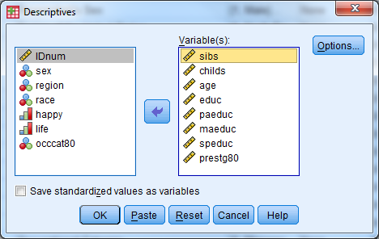
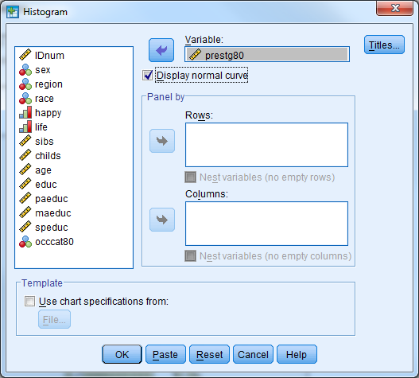
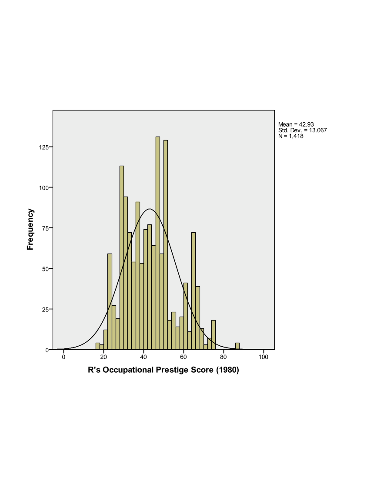
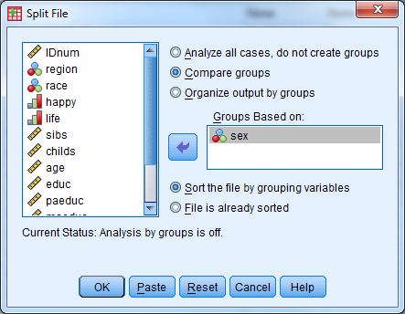
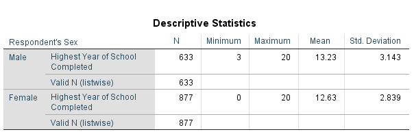

9 Exercise 8 Solutions
Open Exercise8_Data.sav
Part 1: Investigate the variable attributes. Determine which variables are categorical variables (nominal and ordinal), and which variables are continuous (scale).
Solution:
Open the dataset (Exercise8_Data)
Select the “Variable View” tab
Investigate the labels and measure of each variable
Macintosh HD:Users:jerrick:Desktop:Screen Shot 2017-01-06 at 11.24.37 AM.png
Obtain the appropriate descriptive statistics for each variable in the dataset. Remember, continuous variables should be investigated with 5-point summary descriptives and categorical variables should be investigated with frequency tables.
Solution:
Descriptives:
- Select Analyze - Descriptive Statistics - Descriptives
Select the following variables: sibs, childs, age, educ, paeduc, maeduc, speduc, prestg80
Select “OK”
Notice there are only 519 respondents that have valid data points for all of the continuous variables.

| Descriptive Statistics | |||||
| N | Minimum | Maximum | Mean | Std. Deviation | |
| sibs | 1505 | 0 | 26 | 3.93 | 3.047 |
| childs | 1509 | 0 | 8 | 1.90 | 1.765 |
| age | 1514 | 18 | 89 | 45.63 | 17.808 |
| educ | 1510 | 0 | 20 | 12.88 | 2.984 |
| paeduc | 1069 | 0 | 20 | 10.88 | 4.129 |
| maeduc | 1233 | 0 | 20 | 10.79 | 3.463 |
| speduc | 790 | 0 | 20 | 12.89 | 3.059 |
| prestg80 | 1418 | 17 | 86 | 42.93 | 13.067 |
| Valid N (listwise) | 519 |
Frequency Tables:
Select Analyze - Descriptive Statistics - Frequencies
Select the following variables: sex, region, race, happy, life, occcat80

- Investigate the output
Part 3: Assess the distribution of the Occupational Prestige Score (“prestg80”) with both a histogram (normal curve displayed) and a Q-Q plot. Is the assumption that the population of Occupational Prestige Scores is normally distributed reasonable?
Solution:
Histogram in Legacy Dialogs
Select Graphs - Legacy Dialogs - Histogram
Variable: prestg80
Check box to display normal curve
Select OK

Investigate the output

Q-Q Plot
Select Analyze - Descriptive Statistics - Q-Q Plots
Select the variable prestg80
Select OK

Investigate the output
Look to see how well the plotted points follow the solid diagonal line
It is particularly important to pay attention to the “tails”, or the left most and right most points to see if they follow the line

Part 3: Compare the average highest year of school completed (“educ”) for males and females.
Solution:
Set up the dataset such that the output is split by groups based on sex
Select Data - Split File
Select “Compare Groups”
Select the variable sex for “Groups Based on:”
Select “OK”

Compute the 5-Point Summary Descriptives for “educ”
Select Analyze - Descriptive Statistics - Descriptives
Select the variable “educ”
Select “OK”

Investigate the output
Males have an average of 13.23 years of education
Females have an average of 12.63 years of education

Turn the split file feature off
Select Data - Split File
Select “Analyze all cases, do not create groups” (Alternatively, “Reset” can be selected)
Select “OK”
Part 4: Produce a pie chart for the variable “region”. Use “Legacy Dialogs”.
Solution:
Select Graphs - Legacy Dialogs - Pie
Under “Data in Chare Are” select “Summaries for groups of cases”
Select “Define”

Select the variable “region” for “Define Slices by:”
The default for “Slices Represent” is “N of cases”, and leave this at the default
Select “OK”

- Investigate the output